情報処理 I － 第２回
１．ウィンドウシステムの操作
このコンピュータ (O2) では、
教科書の１．４章（８ページ）に書かれている
Ｘウィンドウシステムが動いています。
しかし、ログイン直後の画面は教科書とはだいぶ違っています。
これは、このコンピュータの操作方法をパソコンの OS
（Windows95 や MacOS）に似せる仕掛けがしてあるためで、
そのため操作方法も少し教科書にかかれているものと異なります。
マウスの動かし方などの基本的な操作方法は教科書と変わらないので、
ここではこのコンピュータ独特の操作方法を中心に解説していきます。
ウィンドウを開く
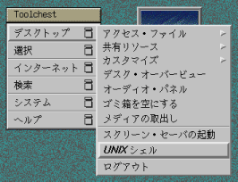
新しい UNIX の端末ウィンドウを開きます。
Toolchest の“デスクトップ”ボタンをクリックし、
“UNIXシェル”のボタンをクリックしてください。
すると下のようなウィンドウが開きます。
このウィンドウの外周の枠をウィンドウフレーム、
上部の“端末 - winterm”と書かれている部分をウィンドウタイトル
（タイトルバー）と呼びます。
タイトルバーの左右に、合計３つのボタンがあります。
左から“メニューボタン”、“最小化（アイコン化）ボタン”、
“最大化ボタン”と呼びます。
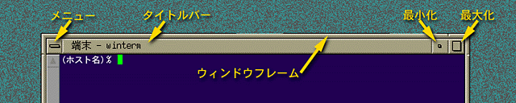
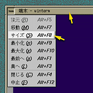
ウィンドウを移動する
次の３つの方法があります。
- メニューボタンをクリックし、“移動 Alt+F7" を選んだ後
（キーボードで Alt を押しながら F7 を押しても可）、
目的の場所でマウスをクリックする。
- タイトルバーをドラッグする。
- タイトルバーかウィンドウフレームをマウスの中ボタンでドラッグする。
- ※
- メニューボタンのメニューは、
タイトルバーやウィンドウフレームをマウスの右ボタンでクリックしても、
表示させることができます。
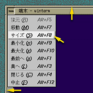
ウィンドウのサイズを変える
次の２つの方法があります。
- メニューボタンをクリックし、“サイズ Alt+F8" を選んだ後
（キーボードで Alt を押しながら F8 を押しても可）、
目的の大きさになったらマウスをクリックする。
- ウィンドウフレームをドラッグする。
奥のウィンドウを手前に出す
次の２つの方法があります。
- メニューボタンをクリックし、“最前へ Alt+F1" を選ぶ
（キーボードで Alt を押しながら F1 を押しても可）。
- タイトルバーかウィンドウフレームをクリックする。
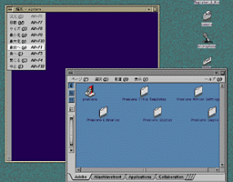
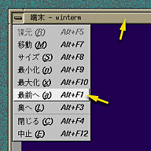
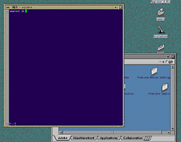
手前のウィンドウを奥に送る
次の２つの方法があります。
- メニューボタンをクリックし、“奥へ Alt+F3" を選ぶ
（キーボードで Alt を押しながら F3 を押しても可）。
- [Ctrl]を押しながら
タイトルバーかウィンドウフレームをクリックする。
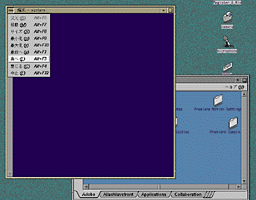
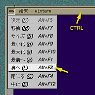
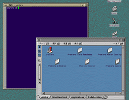
ウィンドウを最小化する
次の２つの方法があります。
- メニューボタンをクリックし、“最小化 Alt+F9" を選ぶ
（キーボードで Alt を押しながら F9 を押しても可）。
- 最小化ボタンをクリックする。
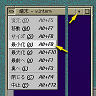
→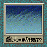
- ※
- 最小化したウィンドウを元に戻すには、
そのウィンドウ（アイコン）をクリックしてください。
ウィンドウを最大化する
次の２つの方法があります。
- メニューボタンをクリックし、“最大化 Alt+F10" を選ぶ
（キーボードで Alt を押しながら F10 を押しても可）。
- 最大化ボタンをクリックする。
- ※
- 最大化したウィンドウを元に戻すには、
最大化ボタンをもう一度クリックしてください。
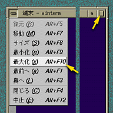
→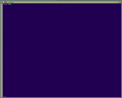
ウィンドウを閉じる
- メニューボタンをクリックし、“閉じる Alt+F4" を選ぶ
（キーボードで Alt を押しながら F4 を押しても可）。
“中止”について
通常はそのウィンドウを開いている
プログラム自体を終了させてください。
Netscape の場合は "ファイル"→"終了"（[Ctrl]
キーと
[Shift]
キーを押しながら
Q をタイプしても可）、コンソールや UNIX シェルなどの端末ウィンドウの場合は
exit[Enter]とタイプするか、
[Ctrl]キーを押しながら D をタイプすれば、
プログラムを終了することができます。
この方法でウィンドウを閉じることができなければ、
メニューボタンをクリックし、“中止 Alt+F12" を選ぶ
（キーボードで Alt を押しながら F12 を押しても可）んでください。
それでも閉じなければ、
端末ウィンドウから xkill[Enter] とタイプして、
閉じたいウィンドウをクリックしてください。
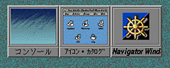
最小化したウィンドウについて
ウィンドウを最小化しても、
そのウィンドウを開いているプログラムは動いています。
最小化したウィンドウをいっぱい並べていると、
それだけコンピュータに負荷をかけますから、
動作が遅くなったり、
場合によってはメモリが不足してプログラムが動かなかったりします。
最小化したウィンドウの上でもマウスの右ボタンを押せば
メニューが現れるので、
そこで“閉じる”か“中止”を選んでください。
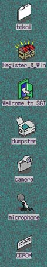
アイコンについて
画面上に表示されるアイコンには、
最小化したウィンドウのほかに、
画面の右端に縦に並んでいるものがあります。
これらは動作しているプログラムではなく、
利用者が作成したデータや、
このコンピュータに備えられた入出力装置などの
“オブジェクト”を示しています。
これらをダブルクリックすることで、
そのオブジェクトに結び付けられたプログラムが起動します。
右の図の一番上は、利用者のホームディレクトリ
（あなたが作成したプログラムやデータを保存する場所）であり、
あなたのユーザ名がついていると思います。
"dumpster" は“ゴミ箱”です。
不要になった“オブジェクト”はここに入れてください。
なお、ここに入れただけでは、オブジェクトは消去されないので、
間違えて捨ててしまったときにはこのゴミ箱をダブルクリックして、
中をあさることができます。
ゴミ箱の中身を完全に空にするには、
Toolchest の“デスクトップ”から“ゴミ箱を空にする”を選んでください。
"Register_&_Win" や "Welcome_to_SGI" は
このシステムのデモンストレーションなので、
この授業では使いません。
無くてもかまわないので、
ゴミ箱に捨ててしまっても構いません。
“カメラ”と“マイク”は、
このコンピュータを使って画像や音声を取り込むときに使います。
これらについてはまたあとで解説します。
CD-ROM は本体に付いている CD-ROM ドライブを示します。
CD-ROM ドライブに CD-ROM や音楽 CD を入れると、
アイコンの形が変わります。
その状態でこのアイコンをダブルクリックすると、
その CD-ROM や音楽 CD の中を参照することができます。
Windows95 や Macintosh の CD-ROM を読むことができます。
但し、CD-ROM 中のプログラムは動きません。
２．Ｗｅｂブラウザの操作
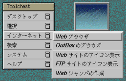
インターネットの代名詞でもある WWW (World Wide Web) を
参照するソフトウェアを“Web ブラウザ”と言います。
このコンピュータにはネットスケープ社の
Netscape Communicator 4.04 というものが使用できます。
Toolchest の“インターネット”から“Web ブラウザ”を選んでください。
初めて Netscape を使うときは、
下のようなウィンドウが現れると思います。
Accept のボタンをクリックしてください。
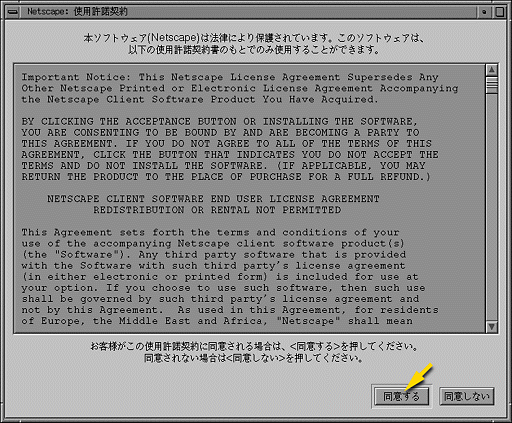
すると、Netscape が起動します。
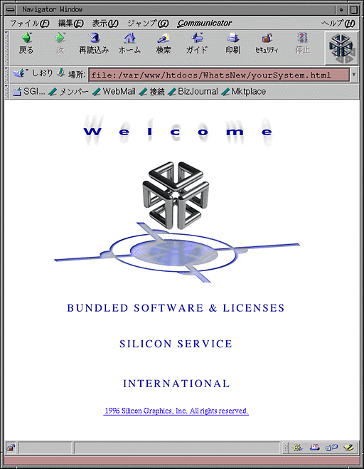
なお、この時下のような２つの警告メッセージが出ます。
ここではこの警告は気にしないで、
両方ともOKのボタンをクリックしてください。
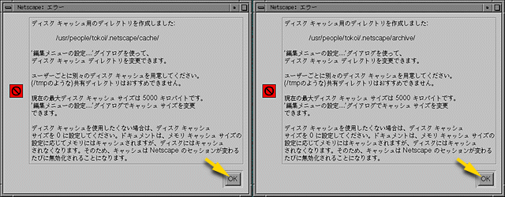
Netscape の初期設定
Netscape を使うにあたり、
いくつか初期設定を行っておく必要があります。
まず最初に、メニューバーの "編集" メニューから、
"設定" を選んでください。
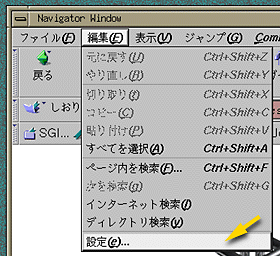
下のようなダイアログウィンドウが現れます。
- "カテゴリ" という枠の中の "メールとグループ"
の左にある三角マークをクリックしてください。
そこに下層のメニューが広がります。
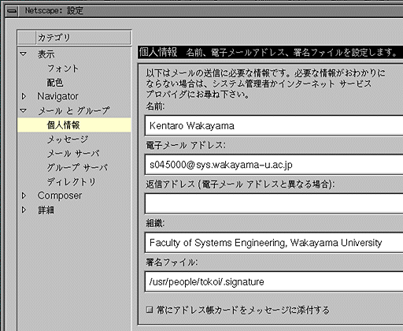
- "個人情報" をクリックしてください。上の図のような欄が現れます。
- この各欄をクリックすればキーボードから文字の入力ができますから、
必要な情報をタイプしてください。
[Tab]キーで次の欄に移ります。
- 名前
- あなたの名前をローマ字で入れてください。
- 電子メールアドレス
- 多分、ユーザ名が最初から入っていると思いますから、
それを下のように変更してください。
ユーザ名@sys.wakayama-u.ac.jp
途中にスペースを空けないでください。
- 返信アドレス
- 空欄のままにしておいてください。
- 組織
- あなたの所属組織です。空欄のままでも結構ですが、一応、
Faculty of Systems Engineering, Wakayama University
とでも入れておいてください。
- 署名ファイル
- 今はそのままにしておいてください。
- 次に、"カテゴリ" の "メッセージ" をクリックしてください。
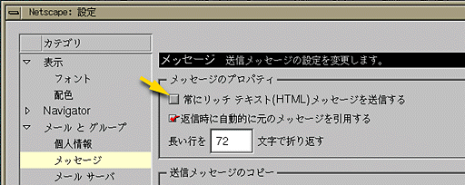
- このダイアログの "常にリッチテキスト (HTML) メッセージを送信する"
のところのチェックボックスの
チェックマークをはずしてください。
- 次に、"カテゴリ" の "メールサーバ" をクリックしてください。
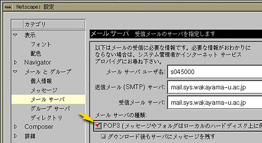
- 最初に、"メールサーバの種類" の "POP3" のチェックボックスをクリックして、
チェックマークを付けてください。
- そのあと、"メールサーバユーザ名" の枠をクリックして、
そこにあなたのユーザ名を入れてください。
また、"送信メール (SMTP) サーバ" と "受信メールサーバ" には、
ともに
mail.sys.wakayama-u.ac.jp
を設定してください。
- 最後に、"カテゴリ" の "詳細" の左の三角マークをクリックし、
表示されるメニューの中の "プロキシ" をクリックしてください。
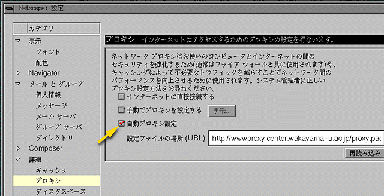
- "自動プロキシ設定" のチェックボックスをクリックし、
設定ファイルの場所 (URL) に
http://www.center.wakayama-u.ac.jp/proxy.pac
を入れてください。
- この後、
このダイアログウィンドウの右下のOKをクリックしてください。
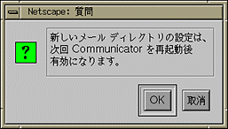
- なお、この作業の途中で右のようなウィンドウが現れます。
OKをクリックして、先に進んでください。
- 次に漢字コードの設定を行います。
メニューバーの "表示" メニューから "文字コードセット" を選び、
"日本語 (Auto-Detect)" を選択してください。
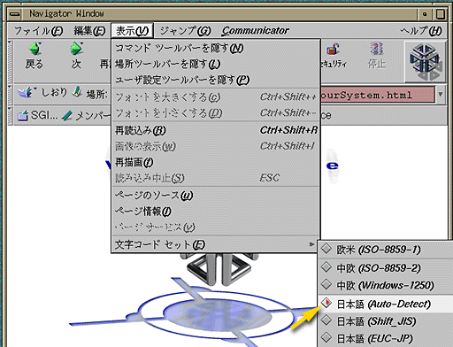
- もう一度メニューバーの "表示" メニューから "文字コードセット" を選び、
今度はその一番下にある "標準に設定" を選択してください。
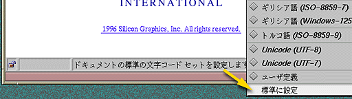
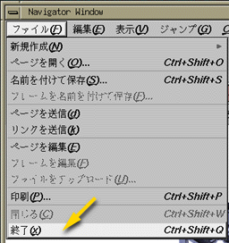
以上の設定が終わったら、
一度 Netscape を終了します。
メニューバーの "ファイル" メニューから "終了" を選ぶか、
Ctrl+Shift+Q （[Ctrl] キーと [Shift]
キーを押しながら Q のキーをタイプする）をタイプして、Netscape
を終了してください。
URL を開く
再び Toolchest の“インターネット”から“Web ブラウザ”を選んで、
Netscape を起動してください。
起動したら、システム工学部のホームページを開いてみましょう。
システム工学部のホームページを開くには、
http://www.sys.wakayama-u.ac.jp/
という URL (Universal Resouce Locator) を指定します。
- メニューバーの "File" メニューから "ページを開く" を選ぶか、
Ctrl+Shift+O をタイプしてください。すると、次のようなウィンドウが現れます。
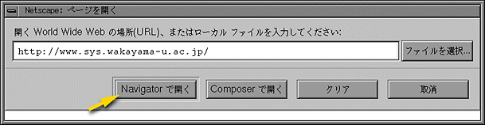
- ここに上の URL をタイプし、
その後、"Navigator で開く" のボタンをクリックしてください。
システム工学部のホームページが表示されると思います。
Netscape 本体のウィンドウ上部の "場所"
に書かれている内容を直接書き換えて[Enter]しても構いません。
なお、この資料自体は、
にあります。
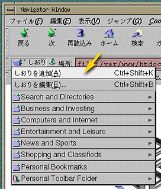
しおりに加える
"しおり" は、
よく参照するページを覚えておく機能です。
- "しおり" のボタンをクリックすると、
登録されている Web ページの一覧が現れます。
- この一覧の一番上の "しおりに追加 Ctrl+Shift+K" を選ぶか、
Ctrl+Shift+K をタイプすれば、
この一覧の一番下に、
現在表示されているページがここに登録されます。
以降はこれを選ぶだけで、
すぐこのページを表示することができます。
- この講義は上記の Web ページを参照しながら進めますので、
しおりに追加しておいてください。
すでに結構な数のしおりが登録されていますが、
日本からでは使いようのないものも結構あるので、
必要に応じて自分で整理してください。
"しおりを編集 Ctrl+Shift+B" を選ぶか Ctrl+Shift+B をタイプすれば、
しおりの編集ウィンドウが現れます。
なお、URL を覚えておく方法はこのほかにもう一つあります。
"場所" という文字の左にある絵をデスクトップにドラッグ
（その絵の上でマウスの左ボタンを押し、
押したまま画面の背景の部分に移動した後、
マウスのボタンを離す）すると、
デスクトップ上に新しいアイコンが現れます。
このアイコンをダブルクリックすると、
Netscape が起動していなければそれを自動的に起動して、
そのページを直接開いてくれます。
見たいページを探す
自分の見たいページを探すには、
“サーチエンジン”と呼ばれる Web ページを利用します。
インターネット上には多くのサーチエンジンがありますが、
これらはおおまかに次の２つのタイプに分類することができます。
- ディレクトリ型
- 人手によって Web ページの情報を分類・整理し、
階層的なデータベースにしたものです。
代表的なものには、以下のようなものがあります。
- 全文検索型
- ロボットと呼ばれるプログラムでインターネットの
あらゆるページの情報を自動的に集め、
全文検索データベースを構築します。
代表的なものには、以下のようなものがあります。
ディレクトリ型は人手によって整理されているために、
無駄な情報が少なく興味のあるカテゴリのページを見つけやすいという
特徴がありますが、その分、
漏れや更新の遅れが大きいと考えられます。
全文検索型は Web ページに含まれる
キーワードを機械的に抜き出してデータベースを構築するので、
漏れが少なく更新も早いと考えられますが、
検索結果の中からすばやく本当に必要な情報を見つけるには
多少の経験が必要です。
ただし、最近はこれらを含むほとんどのところで、
ディレクトリ型と全文検索型の両方の機能を持たせています。
また複数のサーチエンジンを横断して検索できる
「メタサーチ」と呼ばれるものもありますが、
ここでは割愛します。
課題
次のキーワードに関する情報を WWW を利用して調べ、
簡単に説明せよ。
なお、それぞれ情報源とした Web ページの URL を示せ。
- コースティクス
- B2B
- LightWave
- ８月２日（水）に京都ミューズホールでコンサートするアーチスト
- 自分と同姓同名の人物
検索キーワードを入力するときに漢字を使いたいときは、
Ctrl+\ をタイプしてください。
Netscape の左下隅に“[あr]" と表示されたら、
ローマ字でキーワードをタイプしてください。
Ctrl+W で漢字に変換します。
また Ctrl+I でカタカナに変換します。
英数字入力に戻すには、
もう一度 Ctrl+\ をタイプしてください。